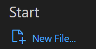
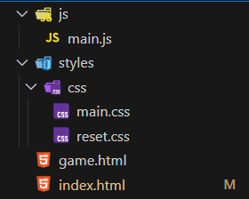
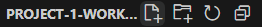
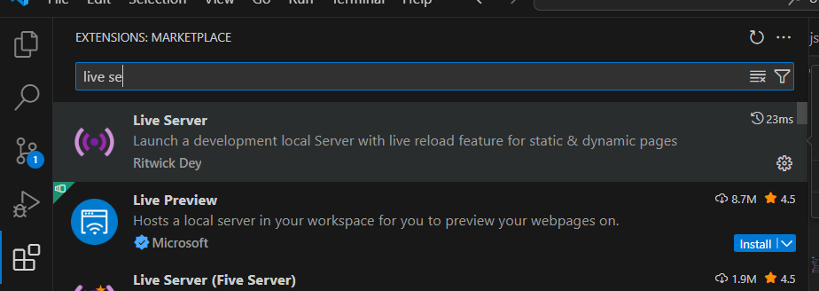

Pong
Pong - Klassiek Twee-Speler Arcade Spel Speel de legendarische arcade-klassieker Pong met z'n tweeën op één pc! Bestuur je paddle met de pijltjestoetsen (speler 1: Z/S, speler 2: ↑/↓) en probeer de bal langs je tegenstander te krijgen. Wie het eerst 10 punten haalt, wint!
Hier hebben we 3 codeertalen voor nodig, namelijk
- CSS
- HTML
- Javascript
Mappenstructuur
We hebben een code-editor nodig. In de workshop gebruiken we Visual studio code.
1.1 Open VS Code
Start een nieuw project:
1.2 Maak een folderstructuur
Maak dezelfde folderstructuur na zoals in de afbeelding
Gebruik volgende icoontje bovenaan de folderstructuur om bestanden en mappen aan te maken
1.3 Installeer de "live-server" extensie
Ga naar extensies (links op vs code) en zoek naar de extensie live-server.
HTML & CSS
2.1 HTML
HTML (HyperText Markup Language) is de basistaal voor webpagina's. Het werkt met "tags" die de browser vertellen welke elementen er op je pagina moeten staan, zoals tekst, afbeeldingen, of knopjes.
Voor ons Pong spel hebben we HTML nodig om:
- De speelruimte (het speelveld) te maken
- De twee paddles te plaatsen
- De bal te tonen
- De score bij te houden
- Instructies voor de spelers weer te geven
Ga naar je index.html file en plak onderstaande code hierin en bewaar dit bestand. Dit is de HTML-structuur voor ons spel.
Korte uitleg van de belangrijkste onderdelen in deze code:
<!DOCTYPE html>- Vertelt de browser dat we moderne HTML gebruiken<html>,<head>,<body>- De basisstructuur van elke webpagina<div class="board">- Maakt het speelveld<div class="ball">- Voegt de bal toe<div class="paddle_1 paddle">en<div class="paddle_2 paddle">- Voegen de twee paddles toe<h1 class="message">- Toont instructies aan de spelers
Uitleg van de classes in onze HTML
Classes in HTML zijn als labels die we aan elementen geven. Ze helpen ons om:
- Elementen te stylen met CSS
- Elementen te selecteren met JavaScript
Laten we de classes in onze Pong-game bekijken:
| Class | Doel | Hoe het gebruikt wordt |
|---|---|---|
board |
Het speelveld maken | Deze krijgt in CSS een zwarte achtergrond en bepaalde afmetingen. In JavaScript gebruiken we het om te detecteren wanneer de bal het speelveld verlaat. |
ball |
De spelbal weergeven | Deze krijgt in CSS een ronde vorm en witte kleur. In JavaScript bepalen we de beweging van dit element. |
ball_effect |
Visueel effect voor de bal | Deze class zorgt ervoor dat de bal er mooi uitziet met de juiste kleuren en vormen. |
paddle |
Gemeenschappelijke eigenschappen van beide paddles | Deze class bepaalt de basisstijl die beide paddles delen, zoals de breedte, hoogte en kleur. |
paddle_1 |
De linker paddle (speler 1) | Specifieke positionering voor de linker paddle. In JavaScript koppelen we dit aan de Z/S toetsen. |
paddle_2 |
De rechter paddle (speler 2) | Specifieke positionering voor de rechter paddle. In JavaScript koppelen we dit aan de pijltjestoetsen. |
player_1_score |
Score van speler 1 | Toont de score van de linker speler. In JavaScript verhogen we deze waarde wanneer speler 1 scoort. |
player_2_score |
Score van speler 2 | Toont de score van de rechter speler. In JavaScript verhogen we deze waarde wanneer speler 2 scoort. |
message |
Instructies en statusberichten | Toont berichten zoals "Druk Enter om te beginnen" of "Game Started". In JavaScript passen we deze tekst aan afhankelijk van de spelstatus. |
Door deze classes te gebruiken, kunnen we specifieke elementen in ons spel aanspreken en aanpassen.
In de JavaScript-code selecteren we deze elementen met
document.querySelector('.class-naam')
en in CSS gebruiken we de selector .class-naam om de stijl ervan te bepalen.
<!DOCTYPE html>
<html lang="nl">
<head>
<meta charset="UTF-8">
<meta name="viewport" content="width=device-width, initial-scale=1.0">
<title>Pong | Tutorial</title>
<link rel="stylesheet" href="styles/css/reset.css">
<link rel="stylesheet" href="styles/css/main.css">
</head>
<body>
<main>
<div class="board">
<div class='ball'>
<div class="ball_effect"></div>
</div>
<div class="paddle_1 paddle"></div>
<div class="paddle_2 paddle"></div>
<h1 class="player_1_score">0</h1>
<h1 class="player_2_score">0</h1>
<h1 class="message">
Druk "Enter" om te beginnen
</h1>
</div>
</main>
</body>
</html>
2.2 CSS
CSS (Cascading Style Sheets) is wat een webpagina mooi maakt. Terwijl HTML de structuur bouwt, maakt CSS het allemaal mooi met kleuren, vormen, posities en animaties.
Voor ons Pong spel gebruiken we CSS om:
- Het speelveld zwart te maken (zoals de originele arcadespellen)
- De paddles en bal wit te maken, met de juiste afmetingen
- Alles op de juiste positie te plaatsen
- De score en instructies leesbaar weer te geven
Hoe werkt CSS? CSS-regels bestaan uit een selector (wat je wilt aanpassen) en blokken met eigenschappen (hoe je het wilt aanpassen):
.board { → Dit selecteert het element met class="board"
height: 85vh; → Dit maakt het 85% van de schermhoogte
background-color: black; → Dit maakt het zwart
} → Dit sluit het stijlblok af
Ga in VS Code naar je css folder en open main.css en plak onderstaande code hierin en bewaar dit bestand. Dit zijn alle stijlen die ons spel er geweldig laten uitzien!
Interessante onderdelen in deze CSS:
position: fixed;- Zorgt ervoor dat elementen zoals de bal en paddles op exacte posities geplaatst kunnen wordenborder-radius: 50%;- Maakt een vierkant element rond, zoals onze bal@keyframes- Wordt gebruikt om animaties te maken (in dit geval voor de draaiende bal)calc()- Een CSS-functie die berekeningen uitvoert, handig voor het positioneren van elementen
Uitleg van de CSS-code:
Body styling
body {
background-color: red;
background-image: linear-gradient(to bottom right, hsl(0, 100%, 50%), hsl(60, 100%, 50%));
background-repeat: no-repeat;
max-width: 77rem;
margin-left: auto;
margin-right: auto;
}
De code hierboven maakt de achtergrond van de pagina. De achtergrond heeft een kleurovergang van
rood naar geel. De max-width zorgt ervoor dat de inhoud niet te breed wordt, en
margin-left: auto; margin-right: auto; centreert alles.
Het Speelveld
.board {
height: 85vh;
width: 80vw;
background-color: black;
border-radius: 0.875rem;
}
Dit maakt het zwarte speelveld waar ons spel in plaatsvindt. De hoogte is 85% van de schermhoogte
(vh) en de breedte is 80% van de schermbreedte (vw). De border-radius maakt de
hoeken rond.
De Bal
.ball {
height: 30px;
width: 30px;
border-radius: 50%;
position: fixed;
top: calc(50% - 15px);
left: calc(50% - 15px);
}
Deze code maakt een bal met een grootte van 30×30 pixels. De border-radius: 50%
maakt de vierkante div rond. Met position: fixed kunnen we de bal overal op het
scherm plaatsen. calc(50% - 15px) plaatst de bal precies in het midden.
De Paddles
.paddle {
height: 100px;
width: 18px;
position: fixed;
}
.paddle_1 {
top: calc(7.5vh + 55px);
left: calc(10vw + 30px);
background-color: white;
}
De code voor de paddles maakt twee balken van 100px hoog en 18px breed. De .paddle
class bevat de gemeenschappelijke stijl voor beide paddles. .paddle_1 en
.paddle_2 bepalen de posities van elke paddle.
Scores en Berichten
.player_1_score, .player_2_score {
color: white;
position: fixed;
}
.message {
position: fixed;
color: white;
}
Deze code zorgt voor de weergave van de scores en instructies. Alle tekst is wit zodat het goed zichtbaar is op het zwarte speelveld. De scores en het bericht worden op vaste posities geplaatst.
Samenvatting: De CSS-code hierboven maakt alle visuele elementen van ons Pong-spel: een zwart speelveld, een witte bal, twee paddles en de tekst voor scores en instructies.
body {
background-color: red;
background-image: linear-gradient(
to bottom right,
hsl(0, 100%, 50%),
hsl(60, 100%, 50%)
);
background-repeat: no-repeat;
max-width: 77rem;
margin-left: auto;
margin-right: auto;
}
.main {
display: flex;
max-width: 60rem;
margin: 0 auto;
padding: 1.5rem;
font-family: "work sans";
font-size: 1.5rem;
padding: 1.5rem;
}
.main a {
color: black;
text-decoration: none;
font-family: "work sans";
}
.board {
height: 85vh;
width: 80vw;
background-color: black;
border-radius: 0.875rem;
}
.ball {
height: 30px;
width: 30px;
border-radius: 50%;
position: fixed;
top: calc(50% - 15px);
left: calc(50% - 15px);
}
.ball_effect {
height: 100%;
width: 100%;
border-radius: 100px;
background-color: white;
}
@keyframes spinBall {
100% {
-webkit-transform: rotate(360deg);
transform: rotate(360deg);
}
}
.paddle {
height: 100px;
width: 18px;
position: fixed;
}
.paddle_1 {
top: calc(7.5vh + 55px);
left: calc(10vw + 30px);
background-color: white;
}
.paddle_2 {
top: calc(85vh + 7.5vh - 100px - 55px);
right: calc(10vw + 30px);
background-color: white;
}
.player_1_score {
height: 50px;
width: 50px;
color: white;
position: fixed;
left: 30vw;
margin-top: 30px;
}
.player_2_score {
height: 50px;
width: 50px;
color: white;
position: fixed;
left: 70vw;
margin-top: 30px;
}
.message {
position: fixed;
height: 10vh;
width: 30vw;
color: white;
left: 38vw;
margin: 30px auto auto auto;
}
Javascript
3.1 De basis van het spel
Maak een nieuw bestand aan in de js map genaamd main.js. Dit bestand zorgt voor de werking van ons spel. Hieronder leggen we stap voor stap uit wat elke regel code doet.
3.2 Variabelen instellen
Eerst moeten we alle onderdelen van het spel in JavaScript definiëren. Dit doen we door ze op te slaan in variabelen.
let gameState = 'start';
let paddle_1 = document.querySelector('.paddle_1');
let paddle_2 = document.querySelector('.paddle_2');
let board = document.querySelector('.board');
let initial_ball = document.querySelector('.ball');
let ball = document.querySelector('.ball');
let score_1 = document.querySelector('.player_1_score');
let score_2 = document.querySelector('.player_2_score');
let message = document.querySelector('.message');
let paddle_1_coord = paddle_1.getBoundingClientRect();
let paddle_2_coord = paddle_2.getBoundingClientRect();
let initial_ball_coord = ball.getBoundingClientRect();
let ball_coord = initial_ball_coord;
let board_coord = board.getBoundingClientRect();
let paddle_common = document.querySelector('.paddle').getBoundingClientRect();
Wat gebeurt hier?
We maken variabelen aan die verwijzen naar de HTML-elementen op onze pagina:
gameState- houdt bij of het spel gestart is of nietpaddle_1enpaddle_2- de twee speelbalkenboard- het speelveldball- de bal die heen en weer stuitertscore_1enscore_2- de scoreweergave van beide spelersmessage- het tekstbericht dat instructies toont
Met getBoundingClientRect() halen we de exacte positie en afmetingen op van deze
elementen.
Dit hebben we nodig om te berekenen wanneer de bal een paddle raakt of het speelveld verlaat.
3.3 Bal beweging instellen
Nu moeten we bepalen hoe de bal beweegt. We stellen een aantal variabelen in die de richting en snelheid bepalen:
let dx = Math.floor(Math.random() * 4) + 3;
let dy = Math.floor(Math.random() * 4) + 3;
let dxd = Math.floor(Math.random() * 2);
let dyd = Math.floor(Math.random() * 2);
Wat betekenen deze variabelen?
dx- de snelheid van de bal op de x-as (horizontaal), tussen 3-6 pixels per bewegingdy- de snelheid van de bal op de y-as (verticaal), tussen 3-6 pixels per bewegingdxd- de richting op de x-as: 0 = naar links, 1 = naar rechtsdyd- de richting op de y-as: 0 = naar boven, 1 = naar beneden
Door Math.random() te gebruiken, krijgt de bal elke keer dat het spel start een andere
snelheid en richting.
Math.floor() rondt het getal naar beneden af naar een geheel getal.
3.4 Bediening van het spel
Nu zorgen we ervoor dat spelers het spel kunnen bedienen. We gebruiken een event listener die luistert naar toetsaanslagen:
document.addEventListener('keydown', (e) => {
if (e.key == 'Enter') {
gameState = gameState == 'start' ? 'play' : 'start';
if (gameState == 'play') {
message.innerHTML = 'Game Started';
message.style.left = 42 + 'vw';
requestAnimationFrame(() => {
dx = Math.floor(Math.random() * 4) + 3;
dy = Math.floor(Math.random() * 4) + 3;
dxd = Math.floor(Math.random() * 2);
dyd = Math.floor(Math.random() * 2);
moveBall(dx, dy, dxd, dyd);
});
}
}
// Besturingstoetsen voor de paddles
if (gameState == 'play') {
// Paddle 1 besturing (Z/S toetsen)
if (e.key == 'z') {
paddle_1.style.top =
Math.max(
board_coord.top,
paddle_1_coord.top - window.innerHeight * 0.06
) + 'px';
paddle_1_coord = paddle_1.getBoundingClientRect();
}
if (e.key == 's') {
paddle_1.style.top =
Math.min(
board_coord.bottom - paddle_common.height,
paddle_1_coord.top + window.innerHeight * 0.06
) + 'px';
paddle_1_coord = paddle_1.getBoundingClientRect();
}
// Paddle 2 besturing (pijltjestoetsen)
if (e.key == 'ArrowUp') {
paddle_2.style.top =
Math.max(
board_coord.top,
paddle_2_coord.top - window.innerHeight * 0.1
) + 'px';
paddle_2_coord = paddle_2.getBoundingClientRect();
}
if (e.key == 'ArrowDown') {
paddle_2.style.top =
Math.min(
board_coord.bottom - paddle_common.height,
paddle_2_coord.top + window.innerHeight * 0.1
) + 'px';
paddle_2_coord = paddle_2.getBoundingClientRect();
}
}
});
Wat gebeurt hier?
Deze code luistert naar toetsaanslagen en reageert daarop:
- De
Enter-toets start of pauzeert het spel - De
ZenStoetsen bewegen de linker paddle omhoog en omlaag - De
Pijltje omhoogenPijltje omlaagtoetsen bewegen de rechter paddle
Als het spel start, gebruikt requestAnimationFrame() om de moveBall
functie aan te roepen,
die de bal laat bewegen. We gebruiken Math.max() en Math.min() om ervoor
te zorgen dat
de paddles niet buiten het speelveld kunnen komen.
3.5 De bal laten bewegen
Tot slot hebben we de functie die de bal beweegt en controleert op botsingen:
function moveBall(dx, dy, dxd, dyd) {
// Controleer botsing met bovenkant van het veld
if (ball_coord.top <= board_coord.top) {
dyd = 1; // verander richting naar beneden
}
// Controleer botsing met onderkant van het veld
if (ball_coord.bottom >= board_coord.bottom) {
dyd = 0; // verander richting naar boven
}
// Controleer botsing met linker paddle (paddle 1)
if (
ball_coord.left <= paddle_1_coord.right &&
ball_coord.top >= paddle_1_coord.top &&
ball_coord.bottom <= paddle_1_coord.bottom
) {
dxd = 1; // verander richting naar rechts
dx = Math.floor(Math.random() * 4) + 3;
dy = Math.floor(Math.random() * 4) + 3;
}
// Controleer botsing met rechter paddle (paddle 2)
if (
ball_coord.right >= paddle_2_coord.left &&
ball_coord.top >= paddle_2_coord.top &&
ball_coord.bottom <= paddle_2_coord.bottom
) {
dxd = 0; // verander richting naar links
dx = Math.floor(Math.random() * 4) + 3;
dy = Math.floor(Math.random() * 4) + 3;
}
// Controleer of de bal het speelveld verlaat (punt gescoord)
if (
ball_coord.left <= board_coord.left ||
ball_coord.right >= board_coord.right
) {
// Verhoog score van de juiste speler
if (ball_coord.left <= board_coord.left) {
score_2.innerHTML = +score_2.innerHTML + 1;
} else {
score_1.innerHTML = +score_1.innerHTML + 1;
}
gameState = 'start';
// Reset de bal naar beginpositie
ball_coord = initial_ball_coord;
ball.style = initial_ball.style;
message.innerHTML = 'Press Enter to Play Pong';
message.style.left = 38 + 'vw';
return;
}
// Beweeg de bal volgens snelheid en richting
ball.style.top = ball_coord.top + dy * (dyd == 0 ? -1 : 1) + 'px';
ball.style.left = ball_coord.left + dx * (dxd == 0 ? -1 : 1) + 'px';
ball_coord = ball.getBoundingClientRect();
// Roep deze functie opnieuw aan voor de volgende animatie-frame
requestAnimationFrame(() => {
moveBall(dx, dy, dxd, dyd);
});
}
Hoe werkt deze functie?
- Muur collisions: Als de bal de boven- of onderkant van het speelveld raakt, stuitert de bal terug door de richting om te keren
- Paddle collisions: Als de bal een paddle raakt, stuitert de bal in de andere richting
- Scoring: Als de bal de linker- of rechterkant van het speelveld raakt, is er een punt gescoord voor de tegenspeler
- Animatie:
requestAnimationFrame()zorgt voor een soepele animatie door de functie steeds opnieuw aan te roepen
3.6 Het volledige script
Nu je alle onderdelen begrijpt, heb je hier het volledige JavaScript bestand. Kopieer deze code naar je main.js bestand:
let gameState = 'start';
let paddle_1 = document.querySelector('.paddle_1');
let paddle_2 = document.querySelector('.paddle_2');
let board = document.querySelector('.board');
let initial_ball = document.querySelector('.ball');
let ball = document.querySelector('.ball');
let score_1 = document.querySelector('.player_1_score');
let score_2 = document.querySelector('.player_2_score');
let message = document.querySelector('.message');
let paddle_1_coord = paddle_1.getBoundingClientRect();
let paddle_2_coord = paddle_2.getBoundingClientRect();
let initial_ball_coord = ball.getBoundingClientRect();
let ball_coord = initial_ball_coord;
let board_coord = board.getBoundingClientRect();
let paddle_common =
document.querySelector('.paddle').getBoundingClientRect();
let dx = Math.floor(Math.random() * 4) + 3;
let dy = Math.floor(Math.random() * 4) + 3;
let dxd = Math.floor(Math.random() * 2);
let dyd = Math.floor(Math.random() * 2);
document.addEventListener('keydown', (e) => {
if (e.key == 'Enter') {
gameState = gameState == 'start' ? 'play' : 'start';
if (gameState == 'play') {
message.innerHTML = 'Game Started';
message.style.left = 42 + 'vw';
requestAnimationFrame(() => {
dx = Math.floor(Math.random() * 4) + 3;
dy = Math.floor(Math.random() * 4) + 3;
dxd = Math.floor(Math.random() * 2);
dyd = Math.floor(Math.random() * 2);
moveBall(dx, dy, dxd, dyd);
});
}
}
if (gameState == 'play') {
if (e.key == 'z') {
paddle_1.style.top =
Math.max(
board_coord.top,
paddle_1_coord.top - window.innerHeight * 0.06
) + 'px';
paddle_1_coord = paddle_1.getBoundingClientRect();
}
if (e.key == 's') {
paddle_1.style.top =
Math.min(
board_coord.bottom - paddle_common.height,
paddle_1_coord.top + window.innerHeight * 0.06
) + 'px';
paddle_1_coord = paddle_1.getBoundingClientRect();
}
if (e.key == 'ArrowUp') {
paddle_2.style.top =
Math.max(
board_coord.top,
paddle_2_coord.top - window.innerHeight * 0.1
) + 'px';
paddle_2_coord = paddle_2.getBoundingClientRect();
}
if (e.key == 'ArrowDown') {
paddle_2.style.top =
Math.min(
board_coord.bottom - paddle_common.height,
paddle_2_coord.top + window.innerHeight * 0.1
) + 'px';
paddle_2_coord = paddle_2.getBoundingClientRect();
}
}
});
function moveBall(dx, dy, dxd, dyd) {
if (ball_coord.top <= board_coord.top) {
dyd = 1;
}
if (ball_coord.bottom >= board_coord.bottom) {
dyd = 0;
}
if (
ball_coord.left <= paddle_1_coord.right &&
ball_coord.top >= paddle_1_coord.top &&
ball_coord.bottom <= paddle_1_coord.bottom
) {
dxd = 1;
dx = Math.floor(Math.random() * 4) + 3;
dy = Math.floor(Math.random() * 4) + 3;
}
if (
ball_coord.right >= paddle_2_coord.left &&
ball_coord.top >= paddle_2_coord.top &&
ball_coord.bottom <= paddle_2_coord.bottom
) {
dxd = 0;
dx = Math.floor(Math.random() * 4) + 3;
dy = Math.floor(Math.random() * 4) + 3;
}
if (
ball_coord.left <= board_coord.left ||
ball_coord.right >= board_coord.right
) {
if (ball_coord.left <= board_coord.left) {
score_2.innerHTML = +score_2.innerHTML + 1;
} else {
score_1.innerHTML = +score_1.innerHTML + 1;
}
gameState = 'start';
ball_coord = initial_ball_coord;
ball.style = initial_ball.style;
message.innerHTML = 'Press Enter to Play Pong';
message.style.left = 38 + 'vw';
return;
}
ball.style.top = ball_coord.top + dy * (dyd == 0 ? -1 : 1) + 'px';
ball.style.left = ball_coord.left + dx * (dxd == 0 ? -1 : 1) + 'px';
ball_coord = ball.getBoundingClientRect();
requestAnimationFrame(() => {
moveBall(dx, dy, dxd, dyd);
});
}
3.7 HTML aanpassen
Tot slot moeten we ervoor zorgen dat de HTML het script inlaadt. Voeg deze regel toe onderaan je index.html bestand, net voor de sluit-tag van de body:
<script src="./js/main.js"></script>
3.8 Het spel testen
Nu kan je het spel testen! Rechts bovenaan zie je een link naar "Speel Pong". Als je daarop klikt, kom je in het spel terecht.
Geheugensteuntje voor de bediening:
Enter- Start het spelZenS- Beweeg de linker paddle omhoog en omlaagPijltje omhoogenPijltje omlaag- Beweeg de rechter paddle
Veel plezier met je eigen Pong spel!